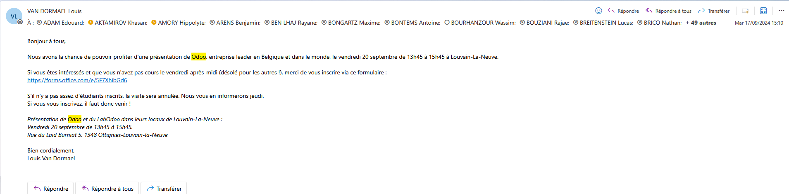
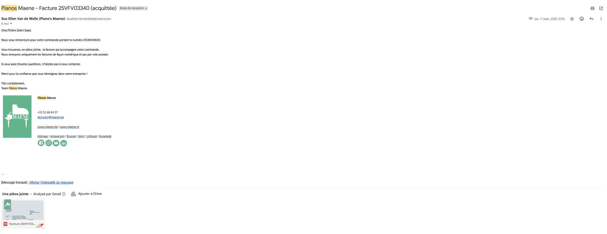
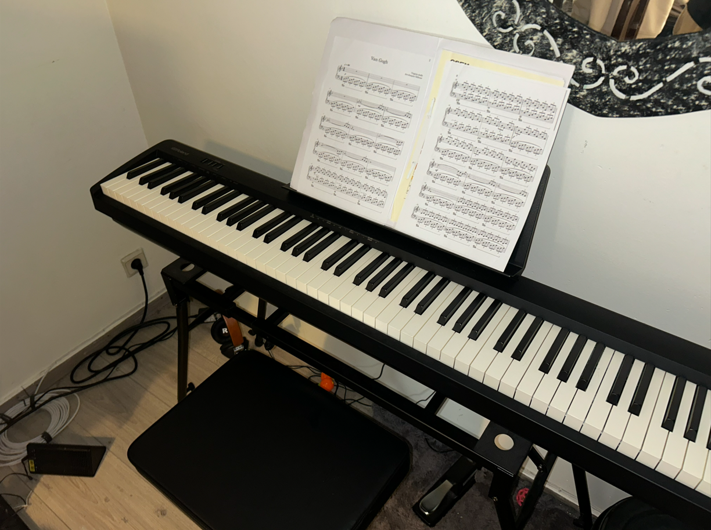
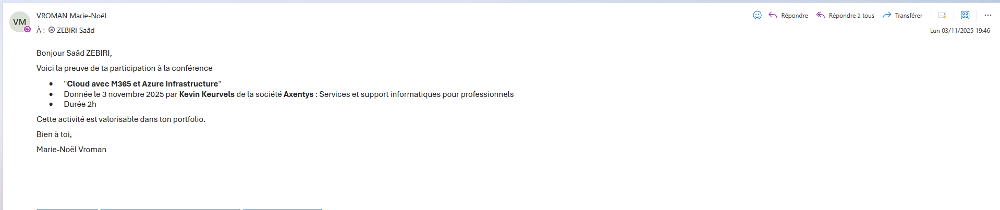
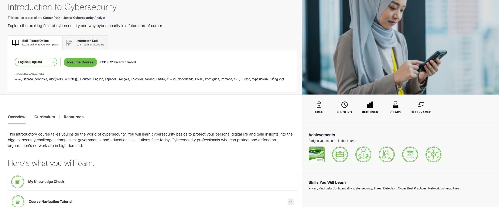
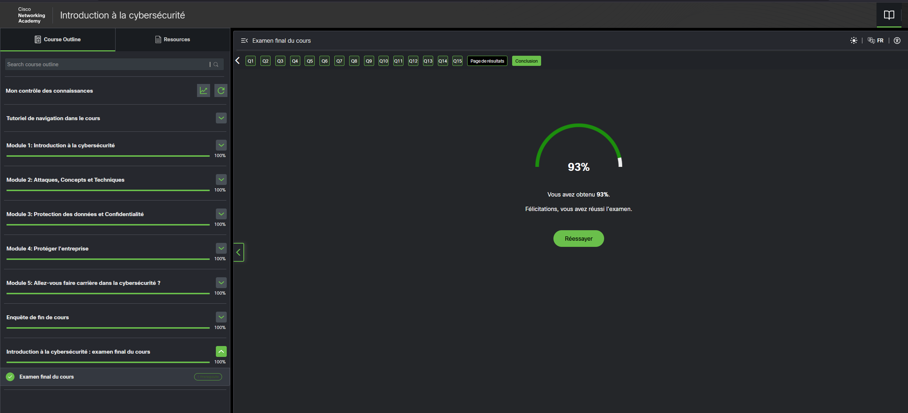
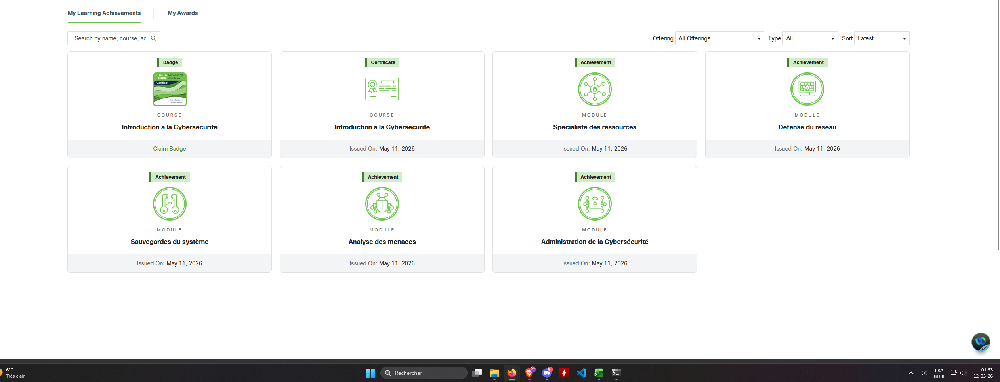
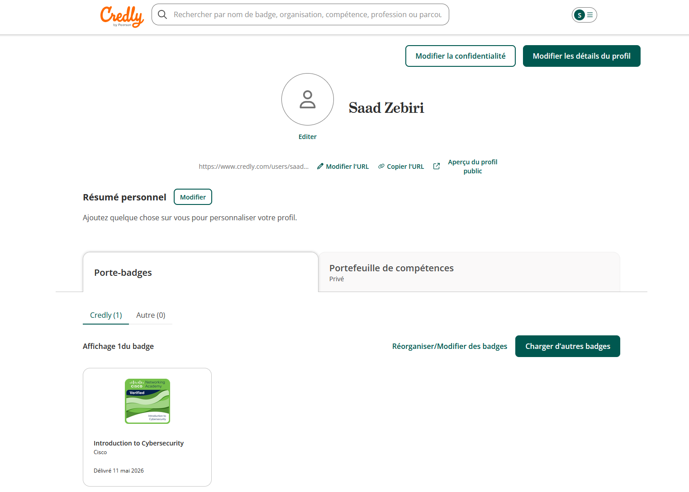

03 — EPHEC · Bachelier TI · 2024–2026
7 thèmes · 9 activités · 53h documentées
Comprendre les enjeux du numérique responsable et concevoir avec sobriété matérielle. Compétence transversale qui touche directement la sécurité (consommation des SOC, infrastructure verte, recyclage matériel).
A · Le cadre
En 2023, j'ai participé à un hackathon Green IT organisé par l'EPHEC sur le campus de Louvain-la-Neuve. Le format était un classique 48h non-stop, du vendredi 17h au dimanche 17h, avec une équipe de 5 étudiants. Le thème central était le numérique responsable et la sobriété matérielle : les organisateurs avaient mis en place plusieurs animations cohérentes avec le sujet (recyclage, un vélo branché à un mixeur pour faire ses smoothies sur les pauses, une attention générale à la sobriété énergétique). Notre projet était un objet connecté avec une interface web pour le piloter. Je me suis réparti la partie front-end avec un autre membre de l'équipe.
B · Les faits
Mon rôle dans le hackathon était de développer l'interface applicative côté utilisateur, en binôme avec un coéquipier. Concrètement, ça voulait dire intégrer le design, gérer les écrans, communiquer avec la partie back-end qu'un autre membre de l'équipe développait. Sur 48h sans pause structurée, le travail en binôme aide énormément : on se relaie, on se relit, on se débogue. Ce que je retiens le plus de l'expérience technique, c'est cette pression du temps qui change complètement la façon de coder. On ne fait pas du beau code, on fait du code qui marche au moment de la démo. Au début c'est frustrant pour quelqu'un qui aime bien faire les choses, mais on apprend à arbitrer entre "ce qui est essentiel" et "ce qui est bonus", et c'est une compétence qui sert dans tous les projets. L'autre apprentissage majeur, c'est l'équipe. À 5, avec des compétences différentes (front, back, design, hardware, présentation), il faut se synchroniser souvent et se faire confiance sur les parties qu'on ne maîtrise pas. On n'a pas gagné le hackathon mais on a été bien classés, ce qui a validé l'effort.
C · La créativité
Ce hackathon a été ma première vraie expérience d'équipe technique sous contrainte. Au-delà du résultat, ce que je retiens, c'est l'ambiance : une cinquantaine d'étudiants concentrés sur le même week-end, des profs qui passent voir où on en est, des moments de fatigue et de relâche complète, un vélo-smoothie qui sert littéralement à faire son petit-déjeuner. C'est cette densité d'expérience qui rend le hackathon formateur, pas le projet en lui-même. Pour mon projet pro, j'en retiens que je suis à l'aise dans un cadre où il faut produire vite et collaborer en flux tendu, ce qui correspond pas mal à ce qu'on attend dans un SOC ou en réponse à incident, où l'urgence et la coordination d'équipe sont la norme. Le côté Green IT m'a aussi marqué, plus que je ne l'aurais cru sur le moment. Ça fait partie des sujets qui prennent de plus en plus d'importance dans les choix d'architecture en entreprise (efficacité énergétique des datacenters, sobriété logicielle), et ce premier contact m'a donné envie de garder un oeil sur ces questions dans la suite de mon parcours.
Preuves
Preuves vidéo
Maîtriser l'infrastructure physique sur laquelle reposent les réseaux et la sécurité. Geste technique qui ancre la compréhension hardware / software.
A · Le cadre
Entre novembre 2025 et fin janvier 2026, j'ai monté mon propre PC fixe, mon premier build personnel. La phase de recherche et de sélection des composants a commencé en novembre 2025, le montage effectif s'est fait fin janvier 2026 une fois toutes les pièces réunies. La configuration retenue est une machine haut de gamme orientée performance : carte graphique ASUS TUF Gaming RTX 5070 Ti OC 16 Go, carte mère MSI MAG B850 Tomahawk MAX WIFI, processeur AMD Ryzen 9, RAM Kingston Fury DDR5, SSD Samsung 990 Pro 2 To NVMe, watercooling AIO Arctic Liquid Freezer III Pro 280 A-RGB. J'ai estimé la durée totale d'apprentissage et de montage à 8h, ce qui couvre l'assemblage physique, la configuration BIOS UEFI, l'installation Windows et des drivers, et le diagnostic de premier démarrage.
B · Les faits
C'était mon premier montage en autonomie totale. La phase la plus longue n'a pas été le montage en lui-même, mais la phase de recherche en amont. Choisir des composants compatibles entre eux n'est pas évident quand on débute : la socket CPU doit correspondre à la carte mère, la RAM doit être supportée à la bonne fréquence, l'alimentation doit être suffisante pour la carte graphique, le boîtier doit accueillir le radiateur du watercooling. Je me suis appuyé sur des configurateurs en ligne et sur des comparatifs YouTube pour valider la cohérence de l'ensemble. Le montage proprement dit a aussi posé ses propres défis. Le câblage est l'étape qui m'a le plus pris de temps : faire passer les câbles derrière la carte mère, brancher les bons connecteurs au bon endroit, gérer les RGB, c'est plus long qu'on ne le pense quand on le fait pour la première fois. La pose du watercooling AIO m'a aussi demandé d'être attentif à l'orientation du radiateur et à la qualité du contact avec le CPU. Au démarrage, tout a fonctionné dès la première fois, ce qui n'allait pas de soi. J'ai ensuite pris en main le BIOS pour activer le profil mémoire XMP, configuré le boot, installé Windows et tous les drivers à la main.
C · La créativité
Monter un PC peut sembler être une activité de loisir sans rapport direct avec un projet pro en informatique, mais c'est tout sauf le cas. Comprendre l'infrastructure physique sur laquelle tournent tous les logiciels qu'on utilise change la façon de penser la pile technique. Avant ce montage, le hardware était pour moi quelque chose d'abstrait. Maintenant, je sais ce qu'il y a derrière les termes, je sais ce qui chauffe, ce qui consomme, ce qui peut tomber en panne. Pour un profil orienté réseaux et sécurité, c'est utile : un serveur, un switch, un routeur reposent sur les mêmes briques de base que mon PC, dans des facteurs de forme différents. La compréhension du hardware est aussi un préalable utile pour aller vers la sécurité OT ou la cybersécurité industrielle, où l'on travaille sur des équipements physiques très concrets. Au-delà de l'aspect technique, ce projet m'a appris à conduire un achat lourd de manière rationnelle : faire des recherches, comparer, anticiper les compatibilités, tenir un budget, choisir un compromis entre performance et coût. C'est une démarche que je retrouverai dans tout choix technique en entreprise.
Preuves


Comprendre l'écosystème du développement open source : modèles économiques, outils, communauté. C'est l'environnement dans lequel travaille une part importante de l'industrie tech, y compris en sécurité.
A · Le cadre
Du 8 au 10 novembre 2023, j'ai assisté à Odoo Experience, l'événement annuel international de l'éditeur belge Odoo, qui se tenait au Brussels Expo, Palais 10. C'est l'un des plus gros rassemblements tech open source en Belgique, qui réunit des développeurs, des intégrateurs, des partenaires Odoo et des clients utilisateurs venus du monde entier. Le badge nominatif que j'avais (catégorie "Teacher-Student", Basic Pass) donnait accès aux conférences générales et aux espaces de démonstration. J'y suis allé par curiosité personnelle, en groupe avec des amis. Mon temps de présence effective sur les sessions et démos a été d'environ 3h.
B · Les faits
Odoo Experience était mon premier contact avec un événement tech d'envergure internationale. L'échelle du salon est impressionnante : plusieurs salles en parallèle, des sessions en anglais comme en français, des démos de modules sur les stands partenaires, un public mélangé entre profils techniques et fonctionnels. Le côté open source de l'écosystème est très visible sur place : on sent une communauté active autour du produit, avec des partenaires qui développent leurs propres modules et les présentent. Je n'ai pas une connaissance approfondie d'Odoo en tant qu'ERP, mais ce que j'ai retenu c'est la densité de cas d'usage couverts par un seul logiciel : compta, ventes, RH, gestion de projet, e-commerce, manufacturing, le tout dans une interface unifiée. Ça donne une autre vision de ce que peut être un ERP par rapport aux idées reçues que j'avais du logiciel d'entreprise (image souvent vieillotte et lourde).
C · La créativité
Ma participation à Odoo Experience a déclenché chez moi un intérêt pour cet acteur belge, qui s'est concrétisé deux ans plus tard par une visite optionnelle de leur siège de Corbais (que je documente comme activité distincte). Pour mon projet pro, ce que je retiens d'Odoo Experience, c'est l'envergure que peut prendre un éditeur belge sur la scène internationale quand il s'appuie sur l'open source comme stratégie. C'est un modèle qui change la donne par rapport au modèle propriétaire classique (Microsoft, SAP, Oracle), et qui mérite d'être compris par quiconque veut travailler dans le numérique en Europe aujourd'hui. Au-delà du contenu technique, cette première grande conférence a aussi été un apprentissage sur ma façon de vivre ce type d'événements : je préfère circuler librement entre les stands et les démos plutôt que de m'asseoir longuement sur une keynote, et c'est un format que j'ai re-choisi par la suite (SETT Namur, Tech Career Night).
Preuves


A · Le cadre
En 2025, j'ai participé à une visite optionnelle organisée par l'EPHEC chez Odoo, dans leur établissement de Corbais (près de Louvain-la-Neuve). C'est le siège belge de l'éditeur et un de leurs centres de développement principal. Le format de la journée mêlait visite des locaux, présentation de l'entreprise, déjeuner sur place avec les équipes, et une démo d'un de leurs outils internes (Runbot, leur système de CI maison qui gère les pull requests sur leur monorepo). J'ai choisi cette visite optionnelle parce que j'avais déjà été à Odoo Experience en 2023 et que je voulais voir l'envers du décor : pas le salon vitrine, mais la vraie boîte au quotidien.
B · Les faits
Plusieurs choses m'ont marqué pendant cette visite. D'abord les locaux : on est loin de l'image classique de l'entreprise IT en open space gris. L'ambiance est plus détendue, presque universitaire, avec beaucoup d'espaces communs où les équipes mangent et discutent. Ça donne une idée concrète de ce que peut être une boîte tech qui a gardé une culture startup même en grandissant. Ensuite la présentation de l'entreprise : leur modèle économique m'a paru cohérent. Odoo est open source, le code est public, mais ils vendent du support, de l'hébergement et des modules entreprise. Concrètement, ils gagnent de l'argent en vendant le service autour du logiciel libre, pas le logiciel lui-même. Je trouve ce modèle plus sain que le pur propriétaire, surtout pour un outil qu'autant d'entreprises utilisent. Enfin la démo de Runbot : voir comment une boîte de cette taille gère les pull requests sur un projet aussi gros (Odoo a des milliers de modules), avec des tests automatisés sur des centaines de configurations en parallèle, c'était impressionnant. Ça m'a donné une autre vision de ce que peut être un pipeline CI à grande échelle.
C · La créativité
Cette visite a complété ce que j'avais vu chez AXA quelques semaines plus tôt, mais dans l'autre sens. Là où AXA m'avait paru rigide et trop processus, Odoo m'a montré un environnement plus libre, plus tech, plus aligné avec ce que je cherche. Ce qui n'est pas juste une question d'ambiance : c'est aussi visible dans leur façon de travailler, plus orientée code et outillage que cérémonies agile. Pour mon projet pro, ça me confirme que je veux bosser dans des structures où l'on construit quelque chose de concret, où le quotidien tourne autour du produit et pas du process. Même si Odoo n'est pas une boîte sécurité, je retiens cette ambiance comme un repère pour mes futurs choix d'entreprise. Et la découverte de Runbot m'a donné envie de creuser les outils CI/CD que j'utiliserai forcément dans un cadre SOC ou DevSecOps.
Preuves

Développer les compétences relationnelles et le réseau professionnel nécessaires pour accéder aux opportunités de stage et d'emploi. Compétences qui ne s'apprennent pas en cours mais qui pèsent fortement dans une carrière.
A · Le cadre
Début 2026, je suis allé au salon SETT Namur (Salon des Solutions et des Ressources pour l'Éducation et la Formation) qui se tient chaque année au parc d'expositions de Namur. C'est un salon professionnel principalement orienté edtech, qui rassemble des éditeurs de logiciels pédagogiques, des fabricants de matériel numérique pour les écoles, et des solutions de formation en entreprise. J'y suis allé par curiosité personnelle, en groupe avec des amis. Le badge nominatif mentionnait mon statut d'étudiant EPHEC. J'ai passé environ 8h sur place, mais je plafonne mon temps valorisable à 5h pour ne retenir que le temps d'apprentissage réellement actif (parcours des stands, échanges, observation des démos), et exclure les pauses et déplacements internes au salon.
B · Les faits
C'était mon premier salon professionnel. L'expérience est très différente d'un cours ou d'une conférence : on circule librement entre des dizaines de stands, on choisit ce qui attire le regard, on peut entrer dans des conversations courtes ou longues selon les exposants. Je ne ressors pas de SETT avec un savoir technique précis, je ressors plutôt avec une vue large sur un secteur que je connaissais peu (les solutions numériques pour l'enseignement et la formation continue). La densité d'offres dans ce domaine m'a surpris : tableaux interactifs, plateformes LMS, outils de gestion administrative pour les écoles, robots éducatifs, solutions VR pour la formation. Je me souviens surtout de l'ambiance générale plus que de stands précis. Pour quelqu'un qui n'avait jamais mis les pieds dans un salon, c'est aussi un apprentissage en soi : se présenter rapidement à un exposant, demander une démo en quelques minutes, savoir circuler sans s'éterniser sur un seul stand.
C · La créativité
Le lien avec mon projet pro est indirect mais réel. SETT m'a montré qu'il existe une économie complète autour du numérique appliqué à des secteurs spécifiques, ici l'éducation. Cette logique de "verticalisation" du numérique (des solutions tech pensées pour un métier précis) se retrouve dans tous les secteurs, y compris en cybersécurité où l'on parle aujourd'hui de sécurité OT, de sécurité santé, de sécurité finance. Voir cette logique appliquée à l'éducation m'a aidé à mieux comprendre la mécanique générale : un éditeur ne vend pas juste un logiciel, il vend une réponse adaptée à un secteur, avec un vocabulaire et des contraintes propres. Au-delà de cette prise de recul, ce salon m'a aussi donné le réflexe d'aller à d'autres événements pros par la suite (Odoo Experience, Tech Career Night), donc il a joué un rôle de déclencheur dans ma démarche d'ouverture sur l'écosystème IT belge.
Preuves

A · Le cadre
Le 13 octobre 2025, j'ai participé à la Tech Career Night organisée par AXA Belgium dans leurs bureaux Regentlaan 7 à Bruxelles. Cet événement est un format de soirée carrière destiné aux étudiants en informatique, qui mêle visite d'entreprise, conférences techniques, speed networking et dîner. Le programme a duré 5h, de 17h à 22h : accueil et drink à 17h, welcome speech à 18h15, business presentations à 18h30 (dont une sur l'innovation IA chez AXA), speed networking sur la fin de soirée, dîner street food à 21h, networking informel jusqu'à 22h. J'ai été accueilli par Alizé Bouton et j'avais un badge Visitor nominatif. C'était la première fois que je participais à un événement de recrutement de ce type en grande entreprise.
B · Les faits
Le coeur de la soirée pour moi, c'est la partie networking. Le format speed networking m'a obligé à pitcher mon parcours rapidement, plusieurs fois de suite, à des profils complètement différents (RH, IT, business). C'est un exercice que je n'avais jamais fait dans ce contexte. En cours, on apprend à présenter un projet technique. On n'apprend pas à se présenter soi-même en 90 secondes à un recruteur qui en voit 20 dans la soirée. J'ai dû apprendre sur le tas à hiérarchiser ce que je raconte (formation, stage, projets perso) selon le profil en face de moi. Une RH ne s'intéresse pas aux mêmes choses qu'un dev senior, et il faut le sentir en quelques secondes. Au-delà du networking, les business presentations m'ont aussi appris quelque chose sur la communication d'entreprise : comment un grand groupe régulé met en scène ses projets innovants pour attirer les jeunes profils, avec une mise en récit travaillée mais qui laisse parfois deviner les vraies questions opérationnelles derrière. C'est un autre angle de lecture que je n'avais pas avant.
C · La créativité
Cette soirée a clarifié pour moi ce que veut dire chercher un emploi en grande entreprise. Ce n'est pas juste candidater. C'est aller à la rencontre, c'est se présenter, c'est savoir adapter son discours en quelques secondes, c'est repérer qui dans la salle peut t'ouvrir une porte. Toutes ces compétences relationnelles ne s'apprennent pas en cours et elles font souvent la différence entre un dossier qui passe et un dossier qui reste sur une pile. Pour mon projet professionnel, j'en retiens deux choses concrètes. D'abord, ce genre d'événements vaut largement les heures investies, je vais en chercher d'autres pendant mon master. Ensuite, la soirée m'a aussi donné un repère sur ce que je veux et ne veux pas dans une entreprise : la culture interne se voit dans ces moments informels, et je sais maintenant que c'est un critère important pour mes futurs choix d'employeur.
Preuves


Compétence pratique transversale et rare. Apprentissage manuel en laboratoire qui complète les compétences logicielles.
A · Le cadre
En 2025, j'ai participé à une séance pratique de soudure dans le laboratoire d'électronique de l'EPHEC, encadrée par Pierre-Yves Gousenbourger et Arnaud Dewulf. L'objectif était double : aider le labo en re-soudant des câbles abîmés du matériel pédagogique, et profiter d'une opportunité concrète de formation manuelle valorisable pour le portfolio. J'étais en groupe avec deux autres étudiants, Rayane Ben Lhaj et Mohamed El Hosni. La séance a duré 2h et a fait l'objet d'un certificat signé par les deux encadrants.
B · Les faits
C'était ma première fois avec un fer à souder, donc j'ai vraiment dû partir de zéro. Les encadrants nous ont appris la base : préparer les fils proprement (dénuder, étamer), doser correctement l'étain pour avoir une soudure brillante et bien ronde, et surtout ne pas trop chauffer le composant pour éviter de l'endommager. Ce sont des gestes qui paraissent simples vus de loin mais qui demandent de la précision en pratique. La main tremble plus qu'on ne croit quand on est face à un fil de quelques millimètres. Au début mes soudures étaient ternes et mal formées, à la fin elles tenaient correctement, ce qui m'a fait plaisir.
C · La créativité
Cette séance a été une expérience très intéressante, dans un domaine assez éloigné de mon quotidien d'étudiant en informatique. Souder un fil n'a pas de lien direct avec mon projet pro, mais ça m'a fait toucher du doigt l'envers technique de tout système informatique : les composants, les câblages, le matériel sur lequel tournent les logiciels qu'on étudie en cours. C'est le genre d'apprentissage manuel qu'on a peu l'occasion de faire dans un cursus IT, et qui apporte une compréhension différente. Au-delà du geste lui-même, ce que je retiens c'est la patience que ça demande, et la satisfaction concrète quand une soudure tient bien. C'est un type de réussite immédiat et tangible qu'on retrouve rarement dans le travail logiciel, et qui fait du bien.
Preuves

Activité personnelle non liée à un cours EPHEC, conformément au critère soft skills. Apprentissage autodidacte qui développe une discipline d'apprentissage transférable.
A · Le cadre
J'ai commencé le piano en autodidacte au début de l'année 2026, après avoir vu quelqu'un jouer et m'être dit que c'était un défi personnel que je voulais tenter. J'ai investi dans un Roland FP-10 BK satiné, un piano numérique avec touches lestées, qui se rapproche au mieux du toucher d'un piano acoustique. Je n'ai pris aucun cours, je travaille à partir de partitions trouvées en ligne. Mon stage m'a réduit le temps disponible, mais j'ai quand même cumulé environ 15h de pratique effective sur les premiers mois. Je plafonne ce thème à 10h dans le portfolio, conformément aux règles EPHEC.
B · Les faits
Apprendre un instrument seul, sans prof, c'est très différent de tout ce qu'on apprend dans un cursus classique. Au début, je me suis cassé les dents sur des choses qui semblaient évidentes : lire deux portées en même temps (main droite et main gauche), coordonner deux mains qui font des choses différentes, garder un tempo régulier sans métronome au début. Le morceau sur lequel je passe le plus de temps en ce moment, c'est "Van Gogh" de Virginio Aiello, un morceau accessible aux débutants mais qui demande déjà pas mal de coordination. La progression est lente et frustrante par moments, parce que le geste musical demande du temps avant d'être automatique. Je gagne 30 secondes de morceau par semaine environ, ce qui paraît peu mais qui s'accumule. Je me suis rendu compte aussi que la vidéo Youtube ou Synthesia ne suffit pas : à un moment il faut comprendre la partition, donc apprendre à lire la musique, et c'est là qu'on bloque souvent au début.
C · La créativité
Le piano n'a évidemment pas de lien direct avec mon projet pro en informatique. Ce que je retiens, c'est plus la méthode que le résultat musical. Apprendre seul, sans cadre scolaire, sans prof qui corrige, c'est un exercice qui ressemble beaucoup à ce qu'on doit faire en informatique quand on apprend une nouvelle techno. Personne ne vient nous tenir la main, on suit une doc, on essaie, on échoue, on recommence. Le piano me rend cette boucle plus consciente parce que les progrès se mesurent à l'oreille, pas en lignes de code qui marchent ou pas. C'est une activité qui me sort des écrans aussi, ce qui devient plus précieux quand on passe sa journée à regarder des logs et des dashboards. Au-delà de ces aspects, c'est juste un domaine totalement différent de ce que je fais d'habitude, et ça change la tête. Je n'ai pas de prétention à devenir bon, juste à progresser à mon rythme et à mesurer ce que ça me fait d'apprendre quelque chose de neuf en partant de zéro à 23 ans.
Preuves
Preuve vidéo


Construire les fondamentaux théoriques de la cybersécurité défensive pour préparer un master cybersécurité et un poste en SOC/Blue Team. Cet axe répond directement à mon projet professionnel.
A · Le cadre
J'ai assisté le 3 novembre 2025 à la conférence "Cloud with M365 and Azure Infrastructure" présentée par Axentys, animée par Kevin Keurvels. La session s'adressait à un public mixte d'étudiants en informatique et de professionnels IT. Le sujet portait sur l'intégration des solutions cloud Microsoft (Microsoft 365 et Azure) dans les environnements d'entreprise.
B · Les faits
Le speaker a balayé pas mal de sujets en deux heures : le cloud hybride (mélange entre serveurs sur site et services cloud), la gestion des identités avec Entra ID, l'authentification multi-facteurs, les politiques d'accès conditionnel. Pour être honnête, je n'ai pas tout suivi : certaines parties techniques étaient dures à raccrocher quand on n'a jamais touché à Azure en vrai. Ce qui est resté, c'est surtout l'idée que la gestion des identités (qui accède à quoi, depuis où, avec quel niveau de vérification) est devenue centrale dans la sécurité moderne. Pas un truc qu'on rajoute à la fin, un pilier.
C · La créativité
Le vrai apprentissage de cette conférence, ce n'est pas un concept précis, c'est une prise de recul. J'ai vu en deux heures à quel point le cloud Microsoft est partout en entreprise et à quel point je ne le maîtrise pas encore. C'est exactement ce qui m'a poussé à suivre le cours Cisco Introduction to Cybersecurity comme première marche concrète. Le cloud, ce n'est plus une option dans mon projet pro, c'est un prérequis. Cette conf m'a servi de réveil plus que de cours, et c'est bien comme ça : un cours, j'aurais oublié, le réveil reste.
Preuves

A · Le cadre
J'ai suivi la formation "Introduction to Cybersecurity" sur Cisco Networking Academy. C'est un cours en ligne en autoformation, gratuit, qui fait partie du parcours Career Path Junior Cybersecurity Analyst proposé par Cisco. La formation dure officiellement 6 heures pour le niveau débutant, avec 7 labs pratiques répartis sur l'ensemble du cursus. Le contenu couvre les fondamentaux de la cybersécurité : la confidentialité des données, la détection des menaces, les bonnes pratiques cyber, les vulnérabilités réseau. J'ai démarré cette formation début mai 2026 et je l'ai terminée avec validation du badge officiel Cisco.
B · Les faits
La formation balaie les bases de la cybersécurité qu'on entend partout mais qu'on ne formalise pas toujours. J'ai retenu en particulier la partie sur les types d'attaques courantes et la manière dont elles s'enchainent (reconnaissance, exploitation, persistance). Les labs pratiques sont accessibles mais utiles : ils m'ont permis de mettre des manipulations concrètes derrière les concepts théoriques. La partie sur les vulnérabilités réseau recoupait des notions que j'avais déjà vues à l'EPHEC, mais avec un angle plus systématisé. Ce que je retiens surtout, c'est que la formation est cohérente avec un parcours de carrière (Junior Cybersecurity Analyst), pas juste avec un sujet isolé. Cisco met en place une logique de progression qui se prolonge sur des cours plus avancés du même Career Path.
C · La créativité
Cette formation est la première étape officielle dans mon parcours cybersécurité hors EPHEC. Elle me sert à deux niveaux. D'abord, elle valide par un badge reconnu (Cisco Networking Academy) une partie de mes acquis théoriques, ce qui répond à ma faiblesse identifiée d'absence de certification. Ensuite, elle me donne un cadre pour continuer après le rendu de portfolio : je peux enchainer sur les cours suivants du Career Path Junior Cybersecurity Analyst, qui couvrent des sujets plus avancés (Endpoint Security, Network Defense, Cyber Threat Management). C'est exactement le type de plan progressif dont j'avais besoin pour structurer ma préparation au master en cybersécurité. Au-delà du contenu, ce que j'apprécie c'est de me sentir entrer dans une logique de filière reconnue, plutôt que de papillonner entre des ressources éparses trouvées sur YouTube.
Preuves



